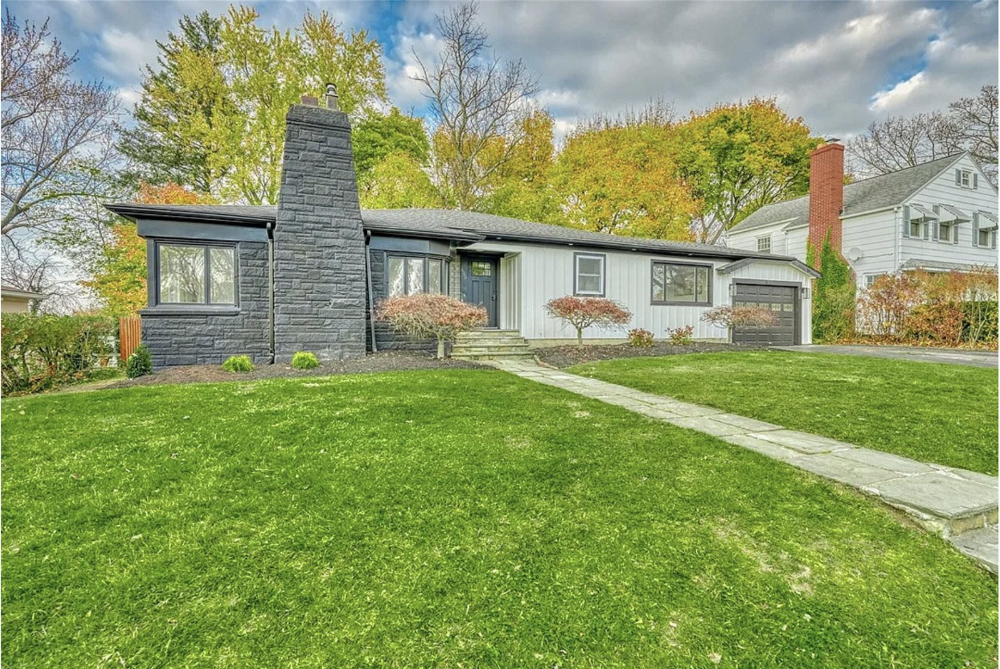

Your Fall 2026 Welcome Guide: Saturday Oct 17 to Monday Oct 19
Kristy and George, here are three days of peak fall color, waterfalls, cider, breweries and the food we love. No set schedule: these are ideas for each day, with the best times to go. Scroll through and pick what sounds good.
🎃🎃🍎🍏
Welcome Kristy and George Cotter to our home!
Casa de Cotter-Patenaude is your home base all weekend. The house is on the east side of the city, five minutes from Irondequoit Bay, ten from Lake America (formerly known as Lake Ontario), and fifteen from downtown and Park Ave. Everything in this guide starts here, and the trees on our street turn too.

Home base
640 Culver Pkwy Rochester, NY 14609
Irondequoit, on the bay side of the city. Donuts Delite is a mile down Culver Rd, Schutt's cider mill is ten minutes east, Seabreeze and the lake are ten minutes north.
The hills south of Rochester should hit peak color exactly this weekend. Loose shape of the three days: Saturday is the city while it is cold, Sunday is the Canandaigua Lake wine loop, and Monday is Letchworth, when it is free, empty and the warmest day. Swap anything; the Epic and Rainy day sections have the alternatives.
Cold and sunny, so a city day: the neighborhoods, the museums, High Falls and Lake America (formerly known as Lake Ontario), with short walks between warm stops. Everything is within 20 minutes of the house. Roughly in a sensible order, but nothing is timed.
45°low 38°
Cold, bright and windy. Coat, hat, gloves.
Sunrise7:27 am
Sunset6:24 pm
Morning
Breakfast: Village Bakery
Pastries and egg sandwiches on Culver Rd at Park Ave. Jines (7 am) or Mad Hatter (8 am) on Park Ave are the other classics.
Tree-lined porches and little storefronts from the 1900s. Walk Oxford St, then Park Ave for shopping: Parkleigh (gifts, opens 10) and Stever's Candies (sponge candy, since 1946). The Harvest Walk scarecrow contest runs 11 to 5 today.
Drive the mansion row the Kodak money built, then tour the Kodak founder's 1905 house and the world's oldest photography museum. Open 10 to 5, $23, free lot. Closed Monday, so today is the day.
🍁 Open Sat 10 to 5, Sun 11 to 5, closed Mon. Allow 90 minutes.
Where you used to live. Walk past VIDA, the free outdoor Hasbro Game Park (an 18-foot fire-breathing dragon, giant Candy Land canes) and MLK Park. Go inside The Strong if they want pinball and the World Video Game Hall of Fame: open till 8 tonight, from $25, garage $7.
🍁 Saturday evening till 8 is the quiet adult window.
The 1869 Powers Building, the Art Deco Times Square Building with its 42-foot aluminum Wings of Progress, Xerox Tower (tallest in town) and the copper Mercury statue on the Aqueduct Building.
A 96-foot waterfall in the middle of downtown. Walk the Pont de Rennes bridge for the view, then lunch upstairs at the brewery: Cream Ale, pilot batches, a free beer museum and an enclosed terrace over the falls.
🍁 Terrace tables go fast 12 to 1:30; go 11:30 or after 2.
Lake America (formerly known as Lake Ontario) looks like an ocean. Walk the pier, climb the 1822 lighthouse (tours Sat and Sun 1 to 5, $5), and get a cone at Abbott's Frozen Custard, in its 100th season (call first, it is end of season).
The best fall color drive inside the city: 977 acres of hills, an arboretum and the lake on your left. Roll past Seabreeze (closed for winter) and Irondequoit Bay on the way home.
Hedges Nine Mile Point for a lakefront dinner (Saturday only), Lento for farm-to-table Italian, or Capitano near the house. Peels on Wheels pizza is Saturday-only too if you want a night in.
🍁 Reserve; Hedges and Lento book up on fall weekends.
The Rochester Philharmonic plays the Aretha Franklin songbook at Kodak Hall (7:30). RIT hosts Michigan State hockey downtown (7:05). Or a candlelit Spirits of the Past walk at Genesee Country Village (5 to 9, sells out).
Prefer the Public Market? It runs 5 to 3 Saturday only: Public Provisions bread, Java's, empanadas, Rohrbach beer hall opens at 10.
Sunday ideas
The big leaf day close to home: through Brighton and Pittsford, down the west side of Canandaigua Lake to Naples at peak color, up through the Bristol Hills for the chairlift, and back for the Bills at 4:25. About 110 miles, nothing over an hour at a stretch.
53°low 38°
Dry, some sun, a light jacket day.
Sunrise7:28 am
Sunset6:23 pm
Morning
Breakfast on Park Ave
Jines, the Greek-American diner everyone sends visitors to (7 to 3). Mad Hatter is the bakery-cafe option (8 to 2:30). Grab a FairPour coffee for the road.
A grocery store people drive across state lines for. The flagship has a food hall, a burger bar and a liquor store the size of a gym. Pick up a picnic for later.
Kershaw Park on the lakefront, then the west-shore road down Canandaigua Lake with the hills turning on both sides. Sonnenberg Gardens and Mansion ($16, wine tasting 12 to 3) is the alternative if gardens beat lakes.
A 15 to 20 minute chairlift to the summit over peak color, short viewpoint walks at the top, and the Morning Star Cafe at mid-station with beer and wine. Runs 11 to 4, Saturday and Sunday only. $15 if booked three days ahead, $20 after; sells out.
🍁 Sat and Sun 11 to 4 only; book ahead, slots sell out.
Italian, steak and seafood ten minutes from the house (Sunday 1 to 9). Black & Blue in Pittsford is the steakhouse backup; Dinosaur Bar-B-Que if they want to judge Rochester BBQ.
Longer version: keep going from Naples to Keuka Lake (35 more minutes) for Route 54A, the Garrett Chapel on Bluff Point and the Hammondsport wineries, and skip the chairlift. Shorter version: come home from Bristol through Bloomfield (Other Half Finger Lakes) and the Harriet Hollister overlook above Honeoye Lake.
Monday ideas
Letchworth: a 17-mile gorge with 600-foot cliffs and three big waterfalls, 50 minutes from the house and at peak. Monday is the day because the $10 gate fee ends Sunday, the weekend crowds that close the gates are gone, and it is the warmest day. Flying out Monday? Do the park in the morning and skip the rest.
Village Bakery (6:30), Jines (7) or the Highland Park Diner, a 1948 railcar with Nutella-stuffed French toast (8). Or pack DiBella's subs for a picnic at Inspiration Point.
The free north-end view above the deepest part of the gorge. Enter the park at Mt. Morris and drive the park road south so the overlooks come in order: Great Bend, Archery Field, Wolf Creek.
🍁 Early; the whole park is empty on a Monday morning.
William Pryor Letchworth's home beside Middle Falls; the dining room windows look straight at the water. Reserve on Tock. Lower Falls Restaurant is the casual option in the park.
🍁 Reserve on Tock; ask for a falls window on arrival.
The last walk: Upper Falls under the Genesee Arch bridge. Optional 25-minute detour south to Stony Brook State Park (three waterfalls, free) on the way out.
On the way home off I-390. America's first municipal Victorian cemetery (1838), 196 hilly acres at full color, and the graves of Susan B. Anthony and Frederick Douglass. Free, drive the lanes; gates close at 5.
Rochester's only pick on USA Today's Restaurants of the Year (Mon 5 to 10). Capitano if you saved it, Black & Blue, or Dogtown for a garbage-plate send-off.
Skip this year: the Adirondacks (four hours and past peak) and Ellicottville (past peak). The Bristol Mountain chairlift runs Saturday and Sunday only.
🍎🍏
Food
Rochester specialties the Texans should try: the garbage plate, Zweigle's white hots, sponge candy, fried cakes from a cider mill, grape pie in Naples, and Genesee Cream Ale over the falls. Monday is the trap; a lot of places close. Hours below are for this weekend.
Take Route 104 west through the apple country to Lewiston, then the Niagara Scenic Parkway along the gorge (stop at Devil's Hole and Whirlpool State Parks for the rapids and the color). Niagara Falls State Park is free; Goat Island parking about $15. Maid of the Mist runs through Nov 8, $30.25, ponchos included and worth it in the cold. Cave of the Winds is open Sat and Sun ($23) but closed Mon Oct 19 and 20. Passports needed for the Canadian side.
An hour through the Devil's Hole rapids in the Niagara Gorge, wet boat or dry dome boat, $68 plus fuel surcharge. The most fun thing in Western New York; the Lewiston season runs on select days through about Oct 25, so call 1-888-438-4444 this week.
The world's largest glass collection, live hot-glass shows all day, and a studio where you blow your own ornament. Daily 9 to 5, $25. The Rockwell Museum of Western art is a five-minute walk. Drive down through Hammondsport for the leaves.
Sunday Oct 18, 2:30 to 5:30: a narrated Erie Canal lock cruise with live music, $49. The only canal boat sailing this weekend. Sam Patch's cider-and-donut cruises from Pittsford run through Nov 1 ($35); call 585-662-5748 for times.
Balloons Over Letchworth floats over the gorge at peak color, about an hour aloft, $445 a person, weather permitting. October weekends are nearly full; weekdays have space. The truly epic version of Monday.
Vintage steam excursions through Oct 21, $29. Mostly sold out for this weekend; a few seats were left on Sunday's 4:15. Medina's foliage train is not running this year.
By the 1830s, 21 flour mills at the falls made Rochester the biggest flour producer in the country and America's first boomtown. When the mills moved west, the Ellwanger & Barry nurseries made it the Flower City. Kodak, Xerox and Bausch & Lomb made it the World's Image Centre.
The canal reached Rochester in 1823 and crossed the river on a stone aqueduct. The 1842 aqueduct is still there: it's the Broad Street Bridge downtown, and the old canal bed under it carried a subway from 1927 to 1956.
Roll film in 1884, the Kodak camera in 1888, the $1 Brownie in 1900. Eastman gave the city its music school, its theatre, its hospital and dental clinics, and a park with Durand.
In November 1872 she cast a ballot in the presidential election and was arrested at her house on Madison St. The house is a museum; her grave in Mt. Hope gets covered in 'I Voted' stickers every election day.
The country's first daredevil leapt the 96-foot High Falls in November 1829, in front of thousands. He did not survive. There's a canal boat named after him in Pittsford.
The R.T. French Company of Rochester introduced its cream salad mustard at the 1904 St. Louis World's Fair, next to the hot dog. Ragu sauce started on a Rochester front porch in 1937, and Western Union was founded here in 1851.
The Jack Rabbit at Seabreeze opened in 1920 and is the oldest coaster still running in the US (third oldest in the world). Seabreeze itself dates to 1879. It's closed for the season, but you'll drive right past it.
Midtown Plaza opened in 1962 with a monorail for kids and the Clock of Nations. It was torn down in 2008; the Strong's neighborhood and the new downtown grew up around the hole it left.
Highland Park holds 500+ varieties of lilac on 22 acres, and the Lilac Festival has drawn crowds every May since 1898. Olmsted designed the park; Rochester has one of the few complete Olmsted park systems in the country.
Macaroni salad, home fries, two hots, meat sauce. Nick Tahou's has served it since 1918 and owns the name; everyone else calls theirs a 'plate.' Zweigle's has made the white hot since 1880.
1916, in Rochester. The Pittsford store is the flagship and a legitimate tourist stop. Hickey Freeman has sewn suits on North Clinton since 1899, and Genesee has brewed above the falls since 1878.
In 2004 the city bought a giant catamaran to run to Toronto. It lost millions in two seasons and was sold to Venezuela. Rochesterians still bring it up. Do not ask about the ferry.
One of the few rivers in the US that does, from Pennsylvania through Letchworth and the city to Lake America (formerly known as Lake Ontario), dropping over three waterfalls inside the city limits. Rochester gets about 100 inches of snow a year; mid-October is the sweet spot.
Good to know
Things we are booking
Bristol Mountain chairlift, Sunday afternoon
Glen Iris Inn lunch at Letchworth, Monday
Capitano dinner one night, probably Sunday
A Saturday dinner (Hedges on the lake, Lento or Good Luck)
Optional: Peels on Wheels pizza for a night in (Saturday only)
Optional: RPO Aretha Franklin night or the Spirits of the Past candlelit walk, Saturday
Closed on Monday
George Eastman Museum, Memorial Art Gallery, Public Market, Mad Hatter, Peels on Wheels, Swan Market, Lento, Good Luck, Hedges, Swillburger, Radio Social, Blue Barn, Hurd Orchards, Other Half Canandaigua, Parkleigh, Hedonist, Artizanns, the Charlotte lighthouse tours and Cave of the Winds at Niagara.
Open Monday: The Strong, Genesee Brew House, Jines, Village Bakery, FairPour, Stever's, Highland Park Diner, Donuts Delite, Savoia, Dinosaur, Capitano, Redd, Black & Blue, Dogtown, Schutt's, Embark, Record Archive, Craft Company, Casa Larga, Letchworth (free), Sonnenberg, and every Naples and Keuka winery listed.
A few heads-ups
The Irondequoit Bay outlet bridge is swung open for boats until Nov 1, so no shortcut to Webster. Seabreeze and the beach carousel are closed for the season. Letchworth's weekend gates close when the lots fill, which is why we lean Monday. Niagara's Cave of the Winds is closed Oct 19 and 20. Abbott's on the lake is at the end of its season; call first. Photos are linked from the businesses' own sites and Wikimedia Commons and may change.